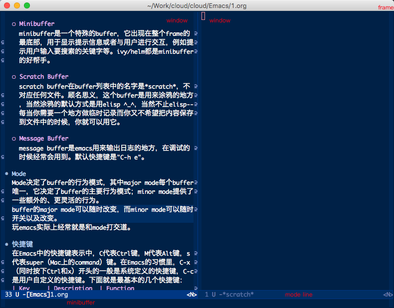
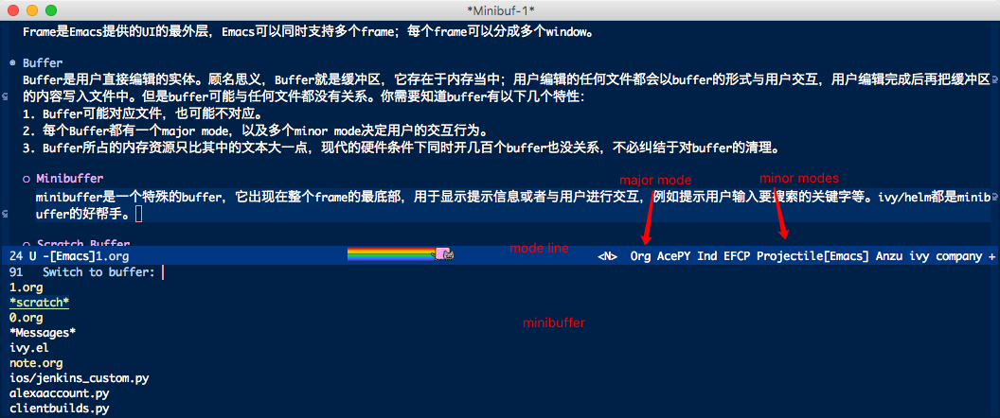

基础
任何更高层的概念都最终由其基础元素所建立；良好的基础能事半功倍。至2018年，Emacs已经40多岁了，许多优秀的（或不优秀的）程序员在生涯中都将其作为主要编辑器。除了Emacs主版本的迭代之外，不同需求、不同境界的程序员都会根据自己的需求编写了许多第三方package（实际上一开始也没有package这种概念，这些都是随着技术的“现代化”等一点点建立起来的）。40年在IT界说是“沧海桑田”也没有太大问题，太多太多新技术出现，Emacs的设计与最初的环境有太多差别。这就带来一个问题，就是Emacs的知识很繁杂，即多且毫无头绪。而抓住了基础也就抓住了纲，不管外围花哨的东西如何变，总是能够清晰的看到学习的脉络，前进的方向。
本章说是基础，其实也算不上，只是稍微认识一下emacs的基础概念热热身。如果你已经是有经验的Emacs的用户，那么可以跳过这一章。

Frame & Window
Frame是Emacs提供的UI的最外层，Emacs可以同时支持多个frame；每个frame可以分成多个window。
Buffer
在Emacs中，我们编辑的基本单位是buffer，而不是通常的文件。编辑行为通常是在buffer间切来切去，而会忽略像文件路径这种属性的存在。这种忽略路径的方式可以极大的提高多文件间编辑的效率。
顾名思义，Buffer就是缓冲区，它存在于内存当中；用户编辑的任何文件都会以buffer的形式与用户交互，用户编辑完成后再把缓冲区的内容写入文件中。但是buffer可能与任何文件都没有关系。你需要知道buffer有以下几个特性：
- Buffer可能对应文件，也可能不对应。
- 每个Buffer都有一个major mode，以及多个minor mode决定用户的交互行为。
- Buffer所占的内存资源只比其中的文本大一点，现代的硬件条件下同时开几百个buffer也没关系，不必纠结于对buffer的清理。
我们还需要知道几个常用的buffer，因为经常需要与它们打交道：
- Minibuffer
minibuffer是一个特殊的buffer，它出现在整个frame的最底部，用于显示提示信息或者与用户进行交互，例如提示用户输入要搜索的关键字等。ivy/helm都对minibuffer提供了大量的修饰，使emacs的使用更加便利。 - Scratch Buffer
scratch buffer在buffer列表中的名字是*scratch*，不对应任何文件。顾名思义，这个buffer是用来涂鸦的地方，当然涂鸦的默认方式是用elisp ^_^，当然不止elisp–每当你需要一个地方做临时记录而你又不希望把内容保存到文件中的时候，就可以使用它。 - Message Buffer
message buffer是emacs用来输出日志的地方，在调试的时候经常会用到。默认快捷键是"C-h e"。
Mode
Mode决定了buffer的行为模式，其中major mode每个buffer唯一，它决定了buffer的主要行为模式；minor mode提供了一些额外的、更灵活的行为。
buffer的major mode可以随时改变，而minor mode可以随时开关以及改变。
玩emacs实际上经常就是和mode打交道。
mode line
mode line一般摆放着与当前编辑的buffer相关的信息，最基础的有文件名、当前编辑的位置在文件的百分比，以及当前buffer所使用的major mode和minor modes。

基本快捷键
在Emacs中的快捷键表示中，C代表Ctrl键，M代表Alt键，s代表super（Mac上的command）键。在Emacs的习惯里，C-x（同时按下Ctrl和x）开头的一般是系统定义的快捷键，C-c是用户自定义的快捷键，C-h是系统提供的帮助函数。下面就是最基本的几个快捷键：
| Key | Description | Function |
| M-x | 执行函数 | execute-extended-command |
| C-g | 取消当前操作 | keyboard-quit |
| C-x C-c | 退出Emacs | save-buffers-kill-terminal |
| C-x C-s | 保存buffer | save-buffer |
| C-x b | 切换buffer | switch-to-buffer |
| C-x C-f | 打开文件 | find-file |
| C-x C-e | 执行光标前的函数 | eval-last-sexp |
上面的几个快捷键，M-x、C-x C-c、C-g一般不会被改掉，其它的几个在自己的配置中完全可以被替换掉。不换掉的原因是没有必要；而且当你的配置出问题时，你的自定义快捷键有可能会失效，这几个默认快捷键就很重要了。
注意，大部分快捷键都不需要记忆，这一点需要与通常的观点区分开。每个人的Emacs都应该符合自己的编辑习惯；当然这与学习其他人更优秀的编辑习惯并不冲突。
Emacs中每个快捷键都与一个交互式（interactive，后面再讲）lisp函数相绑定(如上表最后一列所示；这些函数都是原版的，实际上ivy/helm都提供了对其功能的加强版本)，即按下快捷键实际上会触发一个lisp函数。这个函数可以在运行时动态绑定。
可以通过M-x来触发任何交互式函数。所以，只有 最常用 的功能才需要绑定快捷键，而其他的函数完全可以通过M-x来直接调用。如果使用了ivy或者helm会发现M-x直接调用是很方便的。
关于如何绑定快捷键我们后面再看。
帮助
Emacs提供了强大的文档与帮助系统，要活用这些工具来提高对整个系统的使用以及理解。下面是经常使用的几个帮助快捷键：
| Key | Description | Function |
| C-h i | 查看Emacs自带的帮助文档 | info |
| C-h f | 查看函数帮助 | describe-function |
| C-h C-f | 跳转到lisp函数定义 | find-function |
| C-h v | 查看变量帮助 | describe-variable |
| C-h C-v | 跳转到lisp变量定义 | find-variable |
| C-h k | 查看按键绑定的函数 | describe-key |
| C-h C-k | 跳转到按键绑定的函数定义 | find-function-on-key |
| C-h a | 查看符号帮助 | describe-aprops |
| C-h e | 查看日志输出 | view-echo-area-messages |
它们的名字表明了一切。C-h i查看系统帮助；如果真的以严肃的态度想学好emacs，emacs自带的文档是需要通读的。C-h f/v/a 分别是查看函数、变量、符号（symbol，emacs内置的一种数据结构，函数名、变量名这些实际上都是符号）。当你想知道某个按键绑定的函数是什么时，就使用C-h k。C-h e在debug的时候经常使用。